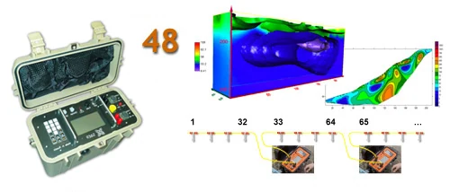
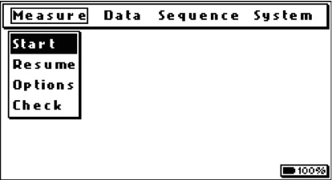
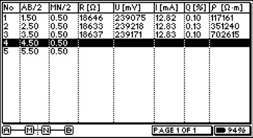
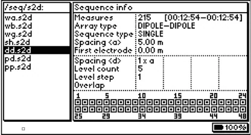
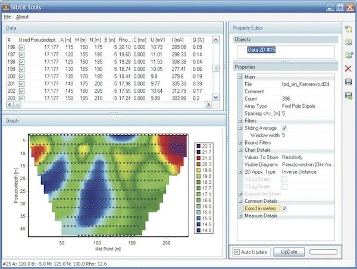
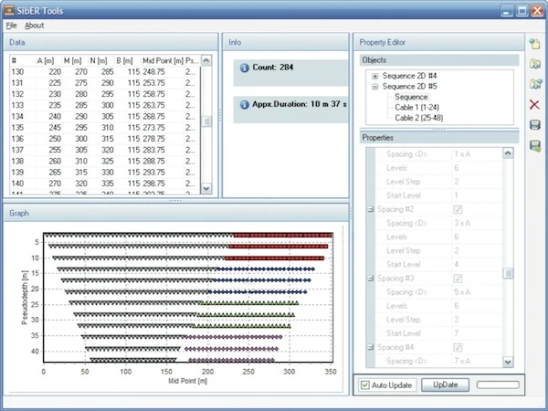
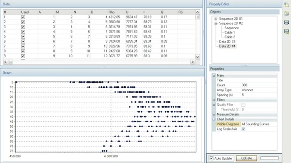
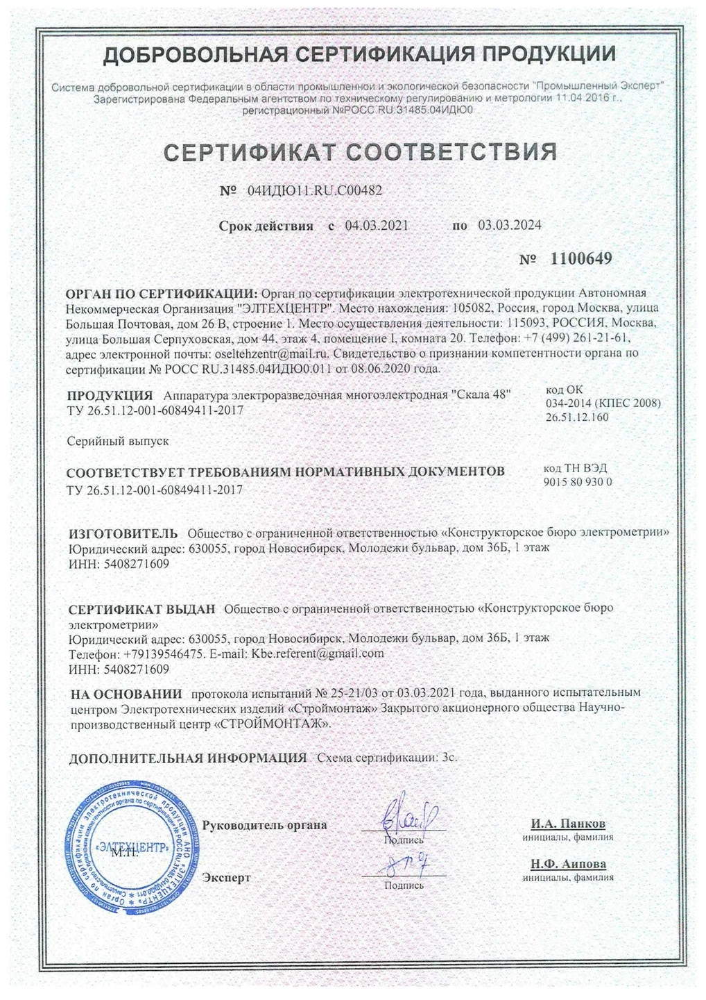
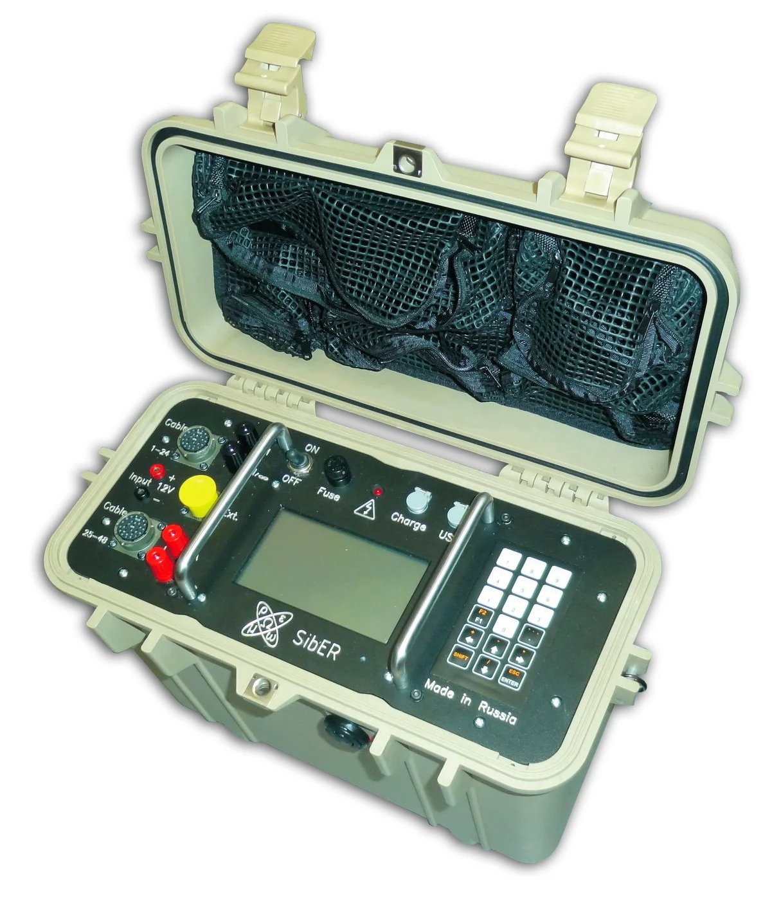

Описание
С 2014 года выпускается 4-я версия модернизации электроразведочной аппаратуры “Скала 48”. Среди результатов модернизации можно выделить следующие:
1. Улучшены схемы обратной связи генератора, что позволяет работать без сбоев при отсутствии нагрузки, а также при КЗ;
2. Уменьшено время измерения;
3. Улучшены параметры механической прочности несущих конструкций;
4. Применены более надежные разъемы плат коммутатора;
5. Улучшены эксплуатационные характеристики генератора;
6. Добавлена защита от перегрева трансформатора.
Изделие четвертой, модернизированной серии, прошло тестовые полевые испытания, а также испытания на вибропрочность, ударопрочность и климатические испытания согласно ГОСТ 26116-84.
Методы сопротивлений основаны на пропускании в земле с помощью пары электродов известного постоянного тока и измерении напряжения, вызванного этим током, с помощью другой пары электродов. Зная ток и напряжение, можно вычислить сопротивление, а с учетом конфигурации электродов можно установить, к какой части подповерхностного пространства это сопротивление относится. Увеличение разноса токовых электродов влечет увеличение глубинности исследования и является зондирующим фактором для вертикального электрического зондирования (ВЭЗ).
Электроразведка Скала 48 имеет встроенное программное обеспечение, которое позволяет:
– программировать коммутацию для работы с 2D томографией;
– обеспечивать сохранность данных при обрывах питания;
– производить отключение любых электродов;
– обеспечивает гибкое управление аппаратурой.



Подключив два 24-х электродных кабеля с шагом 5 метров между электродами, можно менее чем за 10 минут получить данные для построения геоэлектрического разреза по профилю длиной до 235 метров
Для длинных профилей реализован режим «нагоняющего профиля» с переносом первого сегмента многоэлектродного кабеля предыдущей расстановки на место второго в последующей.
Программное обеспечение для PC – SibER Tools, предназначено для создания и редактирования файлов с описанием установок, а также первичной обработки данных – фильтрации, компоновки и экспорта в распространённые форматы (IPI2Win, Res2dInv). Программа позволяет создавать шаблоны измерений как для электротомографии, так и для традиционных четырёхэлектродных зондирований с линейным или геометрическим шагом по разносам.



Производитель КБ “Электрометрии”
Технические характеристики
|
Общие параметры Количество электродов – 48 Внешнее питание – 12 В Внутренний аккумулятор – 12 В, 7 Ач Сенсорный экран – 5″, 240 x 128 Внутренняя память до – 2 Гб Связь с ПК – USB 2.0 Степень защиты корпуса с закрытой крышкой – IP 67 Степень защиты корпуса с открытой крышкой – IP 54 Рабочая температура – от -20 до +40 °C Габариты 420 x 340 x 230 мм Вес 11 кг |
|
Измеритель Число измерительных каналов – 1 Входное сопротивление – 10 МОм Ширина полосы пропускания – 20 Гц Диапазон измеряемых напряжений – от ±0.1 мВ до ±250 В Ослабление помех промышленной частоты 50,60 ГЦ – 65 дБ Точность измерения напряжения – 1 % Разрядность АЦП – 24 бита Защита от перенапряжения до – 1 кВ |
|
Внутренний генератор Рабочие частоты – 3.33, 0.86, 0.78, 0.74, 0.69, 0.66, 0.60 Гц Выходной ток – 1 ÷ 2000 мА Мощность максимальная – 200 Вт Точность измерения тока – 1 % Максимальное напряжение – 500 В Защита от короткого замыкания – есть |
|
Измерительные установки Веннера (α, β, γ конфигурации), Шлюмберже, дипольная осевая, трёхэлектродная (прямая и обратная конфигурации), двухэлектродная и их взаимные аналоги, у которых питающие и измерительные электроды меняются местами |
|
Режимы работы Метод сопротивлений – есть Метод вызванной поляризации (IP) – есть Подключение внешнего коммутатора – нет Подключение внешнего генератора – нет |
Комплектация и цены
Загрузки
Инструкция по эксплуатации Скала 48 – редакция от 06.05.2019 |
|
SibER Tools |
 |
«RiPPP» программное обсепечение для предварительной обработки данных – Версия 1.12 |
|
«S2Dmake» плагин для создания пользовательских шаблонов *.s2d |
|
SibER Tools – предназначена для создания и редактирования файлов с описанием установок, а также первичной обработки данных – фильтрации, компоновки и экспорта в распространённые форматы (IPI2Win, Res2dInv, Res3dInv). Программа позволяет создавать шаблоны измерений как для электротомографии, так и для традиционных четырёх-электродных зондирований с линейным или геометрическим шагом по разносам.
Программное обеспечение «RiPPP» предназначено для предварительной обработки данных УЭС/ВП, полученных методом электрической томографии. ПО «RiPPP» позволяет просматривать, компоновать, выполнять фильтрацию данных и экспортировать результаты предварительной обработки в другие форматы.
S2Dmake – представляет собой отдельный программный модуль для экспорта пользовательских шаблонов в табличной форме записи последовательности коммутаций ABMN в формат *.s2d. В загружаемом файле должны быть указаны номера электродов A, B, M, N.
Удалённый электрод обозначается как 0.
Удалёнными могут быть только электроды B и N, как указано на приборной панели.
Применение
– инженерная геология;
– строительство;
– экология;
– археология;
– коммунальное хозяйство;
– гидрогеология;
– специальные задачи.
Галерея


Оборудование, комплектация и консультации: связаться с КБ Электрометрии.